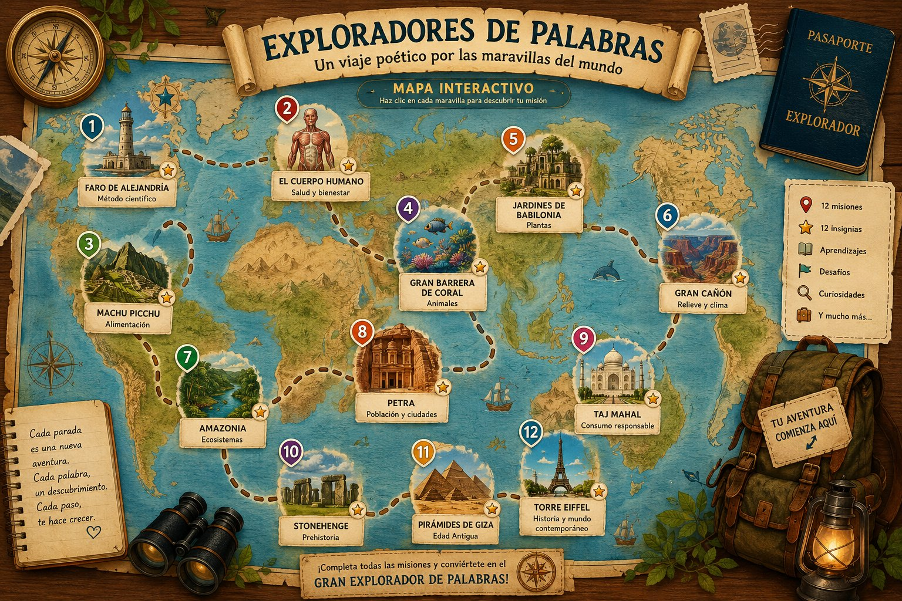

12 maravillas te esperan
Un mapa lleno de poemas, actividades y desafíos
🖱️ Haz clic en cualquier maravilla del mapa para explorarla

¿Cómo usar el mapa?
Pulsa una maravilla
Haz clic sobre cualquier ilustración del mapa para abrir su página.
Lee el poema
Cada maravilla tiene una poesía especial para leer y comprender.
Supera el desafío
Hay tres niveles. ¿Llegarás al nivel Gran Explorador?